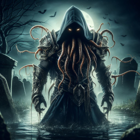

Vampiric mind flayers, also known as vampiric illithids, were created when an illithid tadpole infected with
vampirism entered a humanoid. They could not create spawn and needed both fresh blood (or other bodily liquids such
as cerebrospinal fluid) and fresh brains to survive. Vampiric mind flayers were found in Bluetspur after the
God-Brain, an elder brain ruling the area, was infected with vampirism, along with its tadpoles.
Spells
- Charm Person
- Multi Attack
- Vampire Claws
- Vampiric Touch
Passives
- Alert
- Extra attack
- Vampire Acendant
- Vampire Regeneration